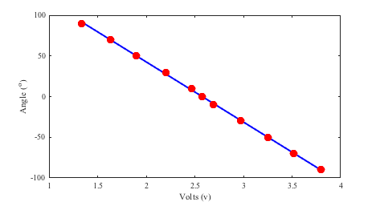
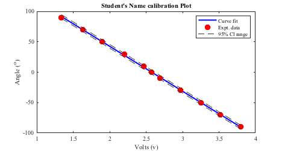
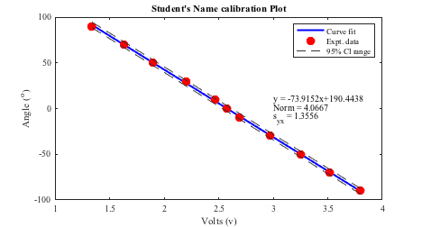

Contents
clear all
close all
clc
User have to manually add information- change x, y, and t_nuP values as required.
x = [3.8005 3.5127 3.2527 2.9704 2.6897 2.5767 2.465 2.206 1.9007 1.6289 1.3384];
y = [-90 -70 -50 -30 -10 0 10 30 50 70 90];
t_nuP= 2.262;
plotTitle = 'Student''s Name calibration Plot';
End of user information
[p,s] = polyfit (x,y,1);
xfit = x;
yfit = polyval(p,xfit);
nu = s.df;
norm = s.normr;
syx = norm/sqrt(nu);
Generating figure with specific size
figure(1)
set(gcf,'unit','inches','position',[0.50 0.50 6.50 3.50],...
'defaultaxesfontsize',10,'defaultaxesfontname','times');
plot(xfit,yfit,'b-','linewidth',2);hold on
plot(x,y,'ro','markersize',9,'markerfacecolor','r')
xlabel('Volts (v)')
ylabel('Angle (^{o})')

Adding 95% confidence level lines in the plot
y_cl_low = yfit - t_nuP*syx;
y_cl_up = yfit + t_nuP*syx;
plot(xfit,y_cl_low,'--','color',[0.2 0.2 0.2], 'HandleVisibility','off');
plot(xfit,y_cl_up,'--','color',[0.2 0.2 0.2]);
Adding legend and title
legend('Curve fit','Expt. data','95% Cl range','location','Northeast')
title(plotTitle)

Adding text with relevant curvefitting information
text(3,10,sprintf('y = %3.4fx+%3.4f',p(1),p(2)),'Fontname','times')
text(3,0,sprintf('Norm = %3.4f',s.normr),'Fontname','times')
text(3,-10,sprintf('s_{yx} = %3.4f',syx),'Fontname','times')

Saving the files in png and pdf format
figName = ['../Figures/Student_Name_Exp02_Part1'];
set(gcf,'PaperPositionMode','auto')
print(figName,'-dpng','-r600')
set(gcf,'PaperUnits','inches','Units','inches');
figpos = get(gcf,'Position');
set(gcf,'Papersize',figpos(3:4),'Units','inches');
print(figName,'-dpdf','-r600')